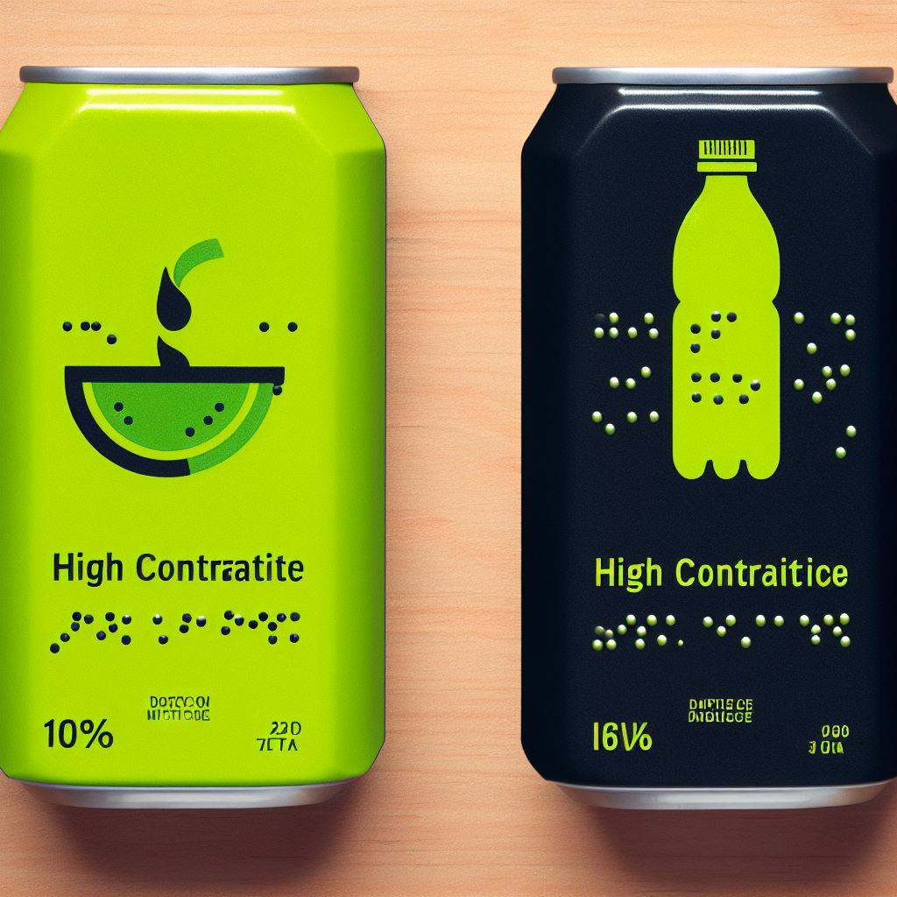
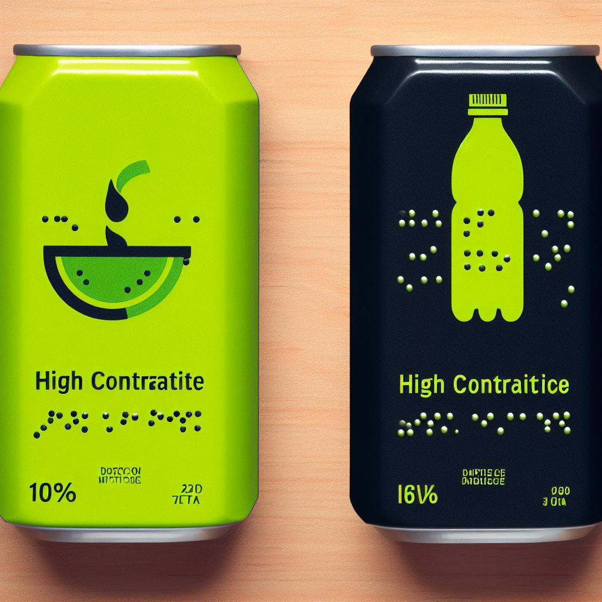

1. Etiquetas Claras nos Produtos
Coloque etiquetas de fácil leitura nos produtos, fornecendo informações claras sobre preço, características e instruções. Isso auxilia clientes com deficiência visual e também beneficia todos os clientes.
Esta seção apresenta tutoriais passo a passo para aprimorar a acessibilidade em estabelecimentos comerciais:
Coloque etiquetas de fácil leitura nos produtos, fornecendo informações claras sobre preço, características e instruções. Isso auxilia clientes com deficiência visual e também beneficia todos os clientes.
Ofereça atendimento personalizado para clientes que necessitam de assistência adicional. Esteja pronto para ajudar na localização de produtos, descrições detalhadas e qualquer outra necessidade específica.